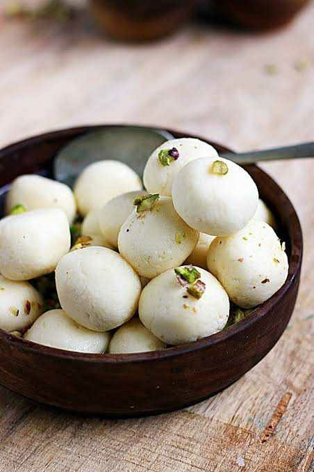

Rasgulla

Description
This is a delicious rasgulla recipe that everyone will love! make sure to follow the instructions carefully, and enjoy your meal!
Ingredients
- 1 liter milk
- 1 cup sugar
- 1/4 teaspoon cardamom powder
- 1 tablespoon lemon juice or vinegar
- Water for boiling
steps
- Boil the milk in a heavy-bottomed pan.
- Add lemon juice or vinegar to curdle the milk.
- Strain the curdled milk using a muslin cloth to separate the whey.
- Knead the chenna (curdled milk) until smooth and soft.
- Divide the chenna into small balls and shape them into smooth round shapes.
- In a large pan, boil water and add sugar to make a syrup.
- Add the chenna balls to the boiling syrup and cook for 15-20 minutes until they double in size.
- Add cardamom powder for flavor and let them cool before serving.
Back to Home